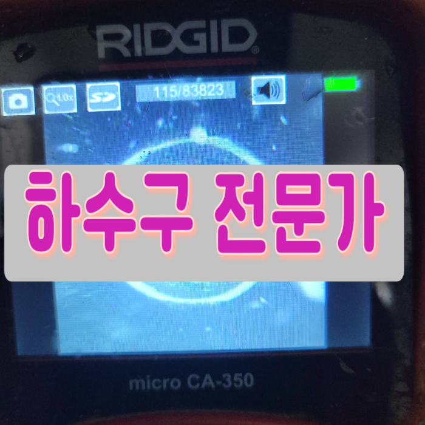
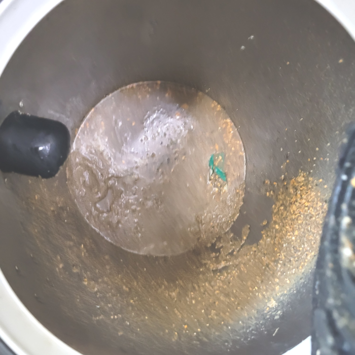
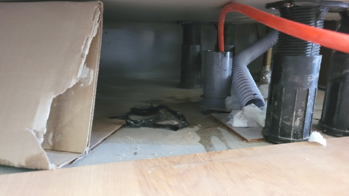
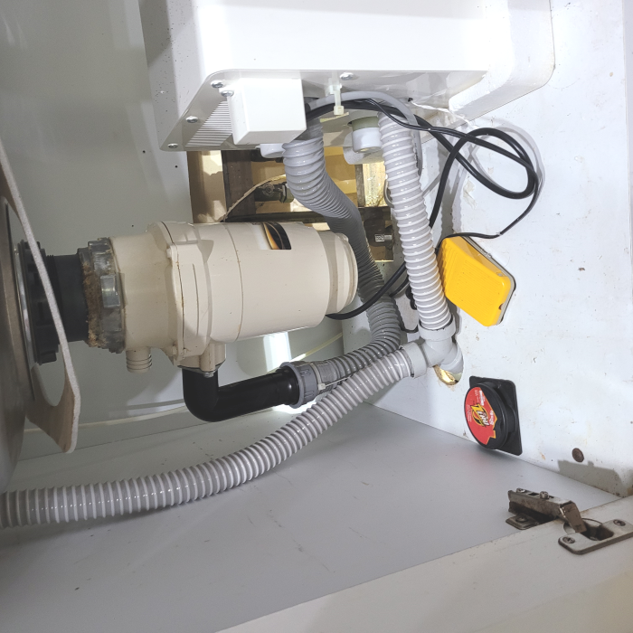
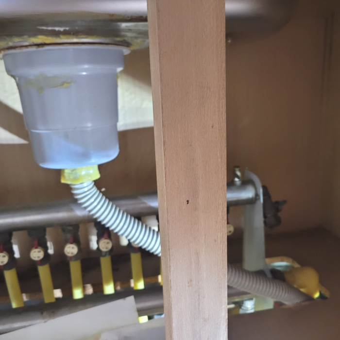
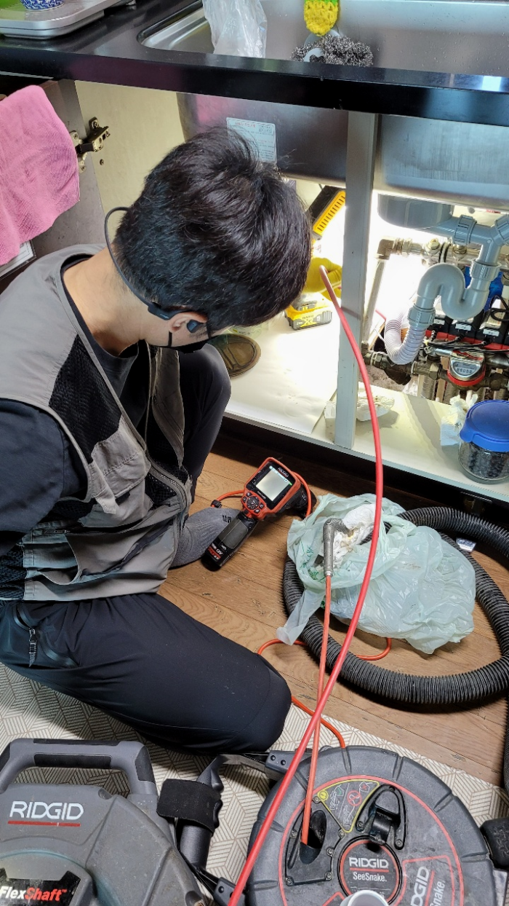
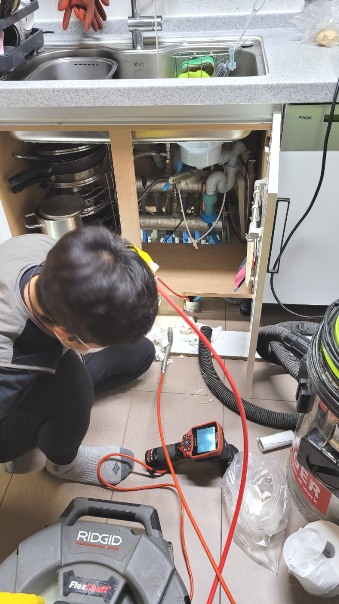

🏠 중랑구 면목동 싱크대배수관막힘 상봉동 배수구역류 뚫는곳 설비
서울 중랑구 싱크대막힘 전문 시공 후기

📋 작업 개요
- 위치: 서울 중랑구, 중랑구, 서울
- 서비스 유형: 싱크대막힘, 변기막힘, 하수구막힘, 배관막힘, 역류해결, 뚫는업체, 배관청소, 고압세척
- 작업 일시: 2024. 1. 17. 0:53
- 업체명: 하수구수사대 (010-5615-2118)
🔍 문제 상황
안녕하세요^^
설비전문업체 "하수구수사대"를 찾아주셔서 감사드립니다.
중랑구 면목동 싱크대배수관막힘 상봉동 배수구역류 뚫는곳 설비
가정집은 물론 상가처럼 큰 건물이나 업체 건물처럼 배출관자체가 큼지막한 곳도 자주 나가서 작업을 합니다. 가정집도 예외 없으면 준비성은 기본이고 금액에 관련해서 우려되시는 분들을위해 기본적으로 유선안내해 드리고 있습니다.

🔎 원인 분석
💡 전문가 진단: 중랑구 면목동 싱크대배수관막힘 상봉동 배수구역류 뚫는곳 설비
퇴수구전문가에게 도움을 받으려 해도 얼마가 들지 모르기 때문에 고민이 되는 게 당연하시겠지만 시간이 흘러갈수록 비용도 늘어나기 때문에 증상이 발견되었을 때 당장 고칠 생각이 없더라도 얼마나 심각한 것인지 견적 정도는 받아보시는 것을 추천드립니다.
원인을 먼저 찾기 위해서 바닥에 있는 물을 제거하고 바닥 퇴수구 배관을 먼저 확인해 보았습니다. 퇴수구 안쪽 배관으로 내시경 카메라를 넣었고 배관 안쪽에 머리카락 덩어리와 여러 이물질들이 쌓여 있는 것을 확인하였습니다. 일단 바닥 퇴수구 쪽으로 석션기를 투입하여 청소를 해야 할 것 같다고 판단되어졌고 퇴수구 배관까지 모두 확인을 해봐야 할 것 같다고 판단되어 확인을 하기로 하였습니다.
이 장비는 비교적으로 약한 최신장비이긴 하지만 시메트처럼 굳은것을 긁어서 해결하는데에는 필수라고 할 수 있습니다. 직접적으로 이물질 분쇄 작업으로 해주는 최신장비가 있으며 입구부분부터 깊숙하게 있는 이물질보다는 일단 조금은 약한 부분부터 살살 긁으면서 내려갈 구멍을 만들었습니다.
사후서비스 까지 확실하게 책임진다는마인드라면 기본가격을 문의해 보세요. 기본가격은 대부분의 업체가 비슷한 선일 텐데요. 기본작업 후 배관 배관내시경으로 여러분의 배관을 검수했을 때 만약 막힘 정도가 심각한 상태라면 추가작업이 필요할 수도 있습니다.
막혀있던 부분을 뚫은 다음 다시 내시경 카메라 최신기계를 투입하여 확인해 보았습니다. 확실히 처음과 달리 깔끔한 하수배관이 눈에 들어왔습니다. 이를 고객님께도 확인시켜 드렸습니다. 내시경 카메라 장비를 이용하면 고객님께서도 직접 문제 상황을 볼 수 있어 안심할 수 있습니다.

🔧 작업 과정
고인 물을 제거하였다면 이후로는 본격적인 고압 세척 작업을 진행해야 합니다.퇴수 막힘 이 발생하였다면 처음 조치를 취해주어야 하는데요, 초기에 조치를 취하지 않는다면 이후 심각한 문제로 번질 가능성이 큰 편이에요.
하수관배관에 오염물이 단단하게 굳어 있는 걸 볼 수 있었으며 플렉스 샤프트 기기로 작업을 하기에는 이물질이 너무 많아서 스프링 장비를 사용하기로 했습니다. 스프링 장비는 하수관배관 규격에 따라 사용할 수 있도록 노즐 사이즈가 다양하게 구성이 되어 있죠.
눈에보이지않는곳까지 이물질들이누적되어있거나 상당수 퇴적되었다면 눈에띄는개선을 기대할순없죠 특히가정에서 하수도 배관이 막히게된다면 물을사용하는데있어 안좋은영향을끼쳐 크고작은불편이생기게되요 이런상황이라면 전문가에게의뢰를해서 해결하는것이 가장안전한방법이에요
안쪽에위치한 기름때들을 강력한압력으로 청소하는 석션기가있고 기계의헤드에 붙어있는 360도로회전하는체인으로 배관 이물질을제거할수있는 스케일링기계도 갖춰져있습니다
그러자 깔끔하게 이물질이 제거된 모습을 체크해 볼 수 있습니다. 작업 전 화면은 노폐물로 인해 뿌옇고 명료하지 않지만, 샤프트 과정 후 퇴수배관은 매우 깔끔하게 정리된 것을 화면으로 볼 수 있습니다. 그 후 주름 호스를 다시 연결하여 본래의 모습으로 복구를 진행합니다. 그리고 수도꼭지를 틀어 물이 잘 내려가는 지 한 번 더 확인을 해보았습니다.
이러한것이 어렵다면은 저번에얘기 해드린것처럼 무엇때문에배수관 막혀버리는것인지 확인할수있는방법이 거의없다고 보시면됩니다.엄청좁은공간을 운으로만 해결하는건 불가능합니다.전문기술을갖추신 실력자라면 최첨단장비없이 출동이불가능합니다.
저희는 빠르게 현장으로 출동하여 배관 입구를 열어서 확인해 봤습니다. 이 배관은 전체적으로 석회가 생겨서 셀프로 이물질들을 모두 뚫었다고 한들 비슷한 문제가 재발할 만한 상황이었습니다.


✅ 작업 완료
혹시라도 배수관막힘 문제가 발생한 경우 신속한 관리가 가능할 수 있도록 주요 장비를 확보하고있는 저희 업체에게 맡겨서 해결하시길 바랍니다.
#하수구막힘 #하수구뚫음 #하수구역류 #씽크대막힘 #싱크대역류 #오수관막힘 #하수구청소 #욕실하수구막힘 #변기막힘 #하수구뚫는비용 #싱크대수리 #화장실막힘




⚠️ 주방 싱크대 배관 막힘 예방 수칙
- ✅ 기름기가 묻은 식기나 프라이팬은 설거지 전 키친타올로 반드시 기름때를 닦아내세요.
- ✅ 주기적으로 싱크대 개수대에 뜨거운 물을 가득 받아 한 번에 내려 배관 내부 기름을 씻어내세요.
- ✅ 배수구 거름망을 미세한 필터로 사용하시고 음식물 찌꺼기가 틈으로 새어 들지 않게 관리하세요.
- ✅ 베이킹소다와 식초를 뜨거운 물과 함께 일주일에 한 번씩 부어주면 배관 살균과 막힘 예방에 좋습니다.
💡 핵심 정리
- 확실한 장비 작업(내시경 점검 및 샤프트 스케일링)으로 원인을 뿌리 뽑습니다.
- 작업 후 1년 이내에 동일한 부위 재발 시 100% 무상 A/S 서비스를 보장합니다.
- 서울 · 경기 · 인천 전 지역에 24시간 언제든 긴급 출동할 수 있도록 항시 대기 중입니다.
❓ 자주 묻는 질문 (FAQ)
🚨 서울 중랑구 싱크대막힘 문제로 고민이신가요?
정확한 원인 진단과 확실한 시공으로 재발 없는 해결을 약속드립니다.
24시간 긴급 출동 | 서울 · 경기 · 인천 전지역 | 1년 내 재발 시 무상 A/S